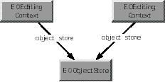
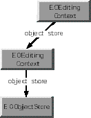
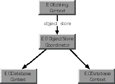

Inherits From:
EOObjectStore : NSObject
Conforms To: EOObserving
Declared in: EOControl/EOEditingContext.h
All objects fetched from an external store are registered in an EOEditingContext along with a global identifier (EOGlobalID) that's used to uniquely identify each object to the external store. The EOEditingContext is responsible for watching for changes in its objects (using the EOObserving protocol) and recording snapshots for object-based undo. A single enterprise object instance exists in one and only one EOEditingContext, but multiple copies of an object can exist in different EOEditingContexts. Thus object uniquing is scoped to a particular EOEditingContext.
Other Classes that Participate in Object Graph Management
EOEditingContext works in conjunction with other classes to manage the object graph. Two other classes that play a significant role in object graph management are EOUndoManager and EOObserverCenter. EOUndoManager is a general-purpose undo stack. As a client of EOUndoManager, EOEditingContext registers undo events for all changes made the enterprise objects that it watches.
The other class that plays a significant role in object graph management is EOObserverCenter. EOObserverCenter provides a notification mechanism for an observing object to find out when another object is about to change its state. "Observable" objects (typically all enterprise objects) are responsible for invoking [self willChange] prior to altering their state (in a "set" method, for instance). Objects (such as instances of EOEditingContext) can add themselves as observers to the objects they care about in the EOObserverCenter. They will then receive objectWillChange: notification whenever an observed object invokes [self willChange].
Programmatically Creating an EOEditingContext
Typically, an EOEditingContext is created automatically for your application as a by product of some other operation. For example, the following operations result in the creation of network of objects that include an EOEditingContext:
EOEditingContext *editingContext = [[EOEditingContext alloc] init];
This creates an editing context that's connected to the default EOObjectStoreCoordinator. You can change this default setting by initializing an EOEditingContext with a particular parent EOObjectStore. This is useful if you want your EOEditingContext to use a different EOObjectStoreCoordinator than the default, or if your EOEditingContext is nested. For example, the following code excerpt initializes childEditingContext with a parent object store parentEditingContext:
EOEditingContext *parentEditingContext; // Assume this exists.
EOEditingContext *childEditingContext = [[EOEditingContext alloc]
initWithParentObjectStore:parentEditingContext];
For more discussion of working programmatically with EOEditingContexts, see the chapter "Application Configurations" in the Enterprise Objects Framework Developer's Guide.
Accessing An Editing Context's Adaptor Level Objects
You can use an EOEditingContext with any EOObjectStore. However, in a typical configuration, you use an EOEditingContext with the objects in the access layer. To access an EOEditingContext's adaptor level objects, you get the editing context's EOObjectStoreCoordinator from the editing context, you get an EODatabaseContext from the object store coordinator, and you get the adaptor level objects from there. The following code demonstrates the process.
EOEditingContext *editingContext; // Assume this exists.
NSString *myEntityName; // Assume this exists.
EOFetchSpecification *fspec;
EOObjectStoreCoordinator *rootStore;
EODatabaseContext *dbContext;
EOAdaptor *adaptor;
EOAdaptorContext *adContext;
fspec = [EOFetchSpecification fetchSpecificationWithEntityName:myEntityName
qualifier:nil
sortOrderings:nil];
rootStore = (EOCooperatingObjectStore *)[editingContext rootObjectStore];
dbContext = [rootStore objectStoreForFetchSpecification:fspec];
adaptor = [[dbContext database] adaptor];
adContext = [dbContext adaptorContext];
This example first creates a fetch specification, providing just the entity name as an argument. Of course, you can use a fetch specification that has non-nil values for all of its arguments, but only the entity name is used by the EOObjectStore objectStoreForFetchSpecification: method. Next, the example gets the editing context's EOObjectStoreCoordinator using the EOEditingContext method rootObjectStore. rootObjectStore returns an EOObjectStore and not an EOObjectStoreCoordinator, because it's possible to substitute a custom object store in place of an object store coordinator. Similarly, the EOObjectStoreCoordinator method objectStoreForFetchSpecification: returns an EOCooperatingObjectStore instead of an EODatabaseContext because it's possible to substitute a custom cooperating object store in place of a database context. If your code performs any such substitutions, you should alter the above code example to match your custom object store's API. See the class specifications for EOObjectStore, EOObjectStoreCoordinator, and EOCooperatingObjectStore for more information.
An EOEditingContext's EOObjectStoreCoordinator can have more than one set of database and adaptor level objects. Consequently, to get a database context from the object store coordinator, you have to provide information that the coordinator can use to choose the correct database context. The code example above provides an EOFetchSpecification using the method objectStoreForFetchSpecification:, but you could specify different criteria by using one of the following EOObjectStoreCoordinator methods instead:
Using EOEditingContexts in Different Configurations
The fundamental relationship an EOEditingContext has is to its parent EOObjectStore, which creates the object graph the EOEditingContext monitors. EOObjectStore is an abstract class that defines a source and sink of objects for an EOEditingContext. The EOObjectStore is responsible for constructing and registering objects, servicing object faults, and committing changes made in an EOEditingContext.
You can augment the basic configuration of an EOEditingContext and its parent EOObjectStore in several different ways. For example, multiple EOEditingContexts can share the same EOObjectStore, one EOEditingContext can act as an EOObjectStore for another, and so on. The most commonly used scenarios are described in the following sections.
Peer EOEditingContexts
One or more "peer" EOEditingContexts can share a single EOObjectStore (Figure 1). Each EOEditingContext has its own object graph-so, for example, a given Employee row in a database can have separate object instances in each EOEditingContext. Changes to an object in one EOEditingContext don't affect the corresponding object in another EOEditingContext until all changes are successfully committed to the shared object store. At that time the objects in all EOEditingContexts are synchronized with the committed changes. This arrangement is useful when an application allows the user to edit multiple independent "documents."

Figure 1 Peer EOEditingContexts
Nested EOEditingContexts
EOEditingContext is a subclass of EOObjectStore, which gives its instances the ability to act as EOObjectStores for other EOEditingContexts. In other words, EOEditingContexts can be nested (Figure 2), thereby allowing a user to make edits to an object graph in one EOEditingContext and then discard or commit those changes to another object graph (which, in turn, may commit them to an external store). This is useful in a "drill down" style of user interface where changes in a nested dialog can be okayed (committed) or canceled (rolled back) to the previous panel.

Figure 2 Nested EOEditingContexts When an object is fetched into a nested EOEditingContext, it incorporates any uncommitted changes that were made to it in its parent EOEditingContext. For example, suppose that in one panel you have a list of employees that allows you to edit salaries, and that the panel includes a button to display a nested panel where you can edit detail information. If you edit the salary in the parent panel, you see the modified salary in the nested panel, not the old (committed) salary from the database. Thus, conceptually, nested EOEditingContexts fetch through their parents.
EOEditingContext overrides several of EOObjectStore's methods:
For a description of how to implement nested EOEditingContexts, see the chapter "Application Configurations" in the Enterprise Objects Framework Developer's Guide.
Getting Data from Multiple Sources
An EOEditingContext's object graph can contain objects from more than one external store (Figure 3). In this scenario, the object store is an EOObjectStoreCoordinator, which provides the abstraction of a single object store by redirecting operations to one or more EOCooperatingObjectStores.

Figure 3 An EOEditingContext Containing Objects from Multiple Sources In writing an application, it's likely that you'll use combinations of the different scenarios described in the above sections.
Fetching Objects
The most common way to explicitly fetch objects from an external store in an Enterprise Objects Framework application is to use EOEditingContext's objectsWithFetchSpecification: method. This method takes a fetch specification and returns an NSArray of objects. A fetch specification includes the name of the entity for which you want to fetch objects, the qualifier (query) you want to use in the fetch, and the sort order in which you want the objects returned (if any). For example, the following code excerpt uses objectsWithFetchSpecification: to fetch all video store members who have Visa credit cards:
EOFetchSpecification *fetchSpec;
NSArray *results;
fetchSpec = [EOFetchSpecification
fetchSpecificationWithEntityName:@"Member"
qualifier:[EOQualifier qualifierWithQualifierFormat:
@"cardType = 'Visa' "]
sortOrderings:nil];
results = [editingContext objectsWithFetchSpecification:fetchSpec];
Note that objects are allocated in the same zone as the EOEditingContext into which they're fetched.
Managing Changes in Your Application
EOEditingContext provides several methods for managing the changes made to objects in your application. You can use these methods to get information about objects that have changed, to selectively undo and redo changes, and to discard all changes made to objects before these changes are committed to the database. These methods are described in the following sections.
Getting Information About Changed Objects
An EOEditingContext maintains information about three different kinds of changes to objects in its object graph: insertions, deletions, and updates. After these changes have been made and before they're committed to the database, you can find out which objects have changes in each of these categories by using the insertedObjects, deletedObjects, and updatedObjects methods. Each method returns an NSArray containing the objects that have been inserted, deleted, and updated, respectively. The hasChanges method returns YES or NO to indicate whether any of the objects in the object graph have been inserted, deleted, or updated.
Undo and Redo
EOEditingContext includes the undo: , redo: , and revert: methods for managing changes to objects in the object graph. undo: asks the EOEditingContext's EOUndoManager to reverse the latest changes to objects in the object graph. redo: asks the EOUndoManager to reverse the latest undo operation. revert: clears the undo stack, discards all insertions and deletions, and restores updated objects to their last committed (saved) values. The undo: and revert: methods are also discussed in the context of managing the object graph, below.
Saving Changes
The saveChanges method commits changes made to objects in the object graph to an external store. When you save changes, EOEditingContext's lists of inserted, updated, and deleted objects are flushed.
Upon a successful save operation, the EOEditingContext's parent EOObjectStore broadcasts an EOObjectsChangedInStoreNotification. Peers of the saved EOEditingContext receive this notification and respond by synchronizing their objects with the committed versions.
Methods for Managing the Object Graph
EOEditingContext provides methods for managing the enterprise objects in the context's object graph. This section describes these methods, as well as other techniques you can use to manage the object graph.
At different points in your application, you might want to do the following:
Breaking Retain Cycles
You use the EOEditingContext methods refaultObjects and refaultObject:withGlobalID:editingContext: to break retain cycles between your enterprise objects. For example, suppose you have an Employee object that has a to-one relationship to its Department, and the Department object in turn has an array of Employee objects. This circular reference constitutes a retain cycle, which you can break using the refault... methods.
Note: Retain cycles are automatically broken if you release the EOEditingContext.
You should use the refault... methods with caution, since refaulting an object doesn't remove the object snapshot from the undo stack. Objects that have been newly inserted or deleted should not be refaulted. In general, it's safer to use refaultObjects than it is to use refaultObject:withGlobalID:editingContext: since refaultObjects only refaults objects that haven't been inserted, deleted or updated. refaultObject:withGlobalID:editingContext: doesn't make this distinction, so you should only use it when you're sure you know what you're doing.
If you want to reset your EOEditingContext and free all of its objects, do the following:
EOEditingContext *editingContext; // Assume this exists.
[editingContext revert]; // Discard uncommitted changes
[editingContext refaultObjects];
Note that you must release any other retains on the enterprise objects in the EOEditingContext for them to actually be freed. For example, to clear a display group that references a list of enterprise objects, you'd do something like the following:
[displayGroup setObjectArray:nil];
Releasing the EODisplayGroup (and any user interface objects that refer to it) also has the effect of releasing the object array.
Using the invalidate... methods (described below) also has the effect of breaking retain cycles, but these methods have a more far-reaching effect. It's not recommended that you use them simply to break retain cycles.
Discarding Changes to Enterprise Objects
EOEditingContext provides different techniques for discarding changes to enterprise objects. These techniques are as follows:
Refreshing Objects
One characteristic of an object graph is that it represents an internally consistent view of your application's data. By default, when you refetch data, Enterprise Objects Framework maintains the integrity of your object graph by not overwriting your object values with database values that have been changed by someone else. But what if you want your application to see those changes? You can accomplish this by using the EOFetchSpecification method setRefreshesRefetchedObjects:. Invoking setRefreshesRefetchedObjects: with the argument YES causes existing objects to be overwritten with fetched values that have been changed. Alternatively, you can use the EODatabaseContext delegate method databaseContext:shouldUpdateCurrentSnapshot:newSnapshot:globalID:channel:.
Normally, when you set an EOFetchSpecification to refresh using setRefreshesRefetchedObjects:, it only refreshes the objects you're fetching. For example, if you refetch employees, you don't also refetch the employees' departments. However, if you use the EOPrefetchingRelationshipHintKey with an EOFetchSpecification in the EODatabaseContext method objectsWithFetchSpecification:editingContext:, the refetch is propagated for all of the fetched objects' relationships that are specified for the hint. For more discussion of this topic, see the EODatabaseContext class specification.
Refreshing refetched objects only affects the objects you specify. If you want to refetch your entire object graph, you can use the EOEditingContext invalidate... methods, described below.
Discarding the View of Objects Cached in Memory
As described in the section "Discarding Changes to Enterprise Objects," you can use undo: or revert to selectively discard the changes you've made to enterprise objects. Using these methods preserves the original cache of values fetched from the database. But what if you want to flush your in-memory object view all together-in the most likely scenario, to see changes someone else has made to the database? You can invalidate your enterprise objects using the invalidateAllObjects or the invalidateObjectsWithGlobalIDs: method. (You can also use the action method refetch:, which simply invokes invalidateAllObjects). Unlike fetching with the EOFetchSpecification method setRefreshesRefetchedObjects: set to YES (described above), the invalidate... methods result in the refetch of your entire object graph.
The effect of the invalidateAllObjects method depends on how you use it. For example, if you send invalidateAllObjects to an EOEditingContext, it sends invalidateObjectsWithGlobalIDs: to its parent object store with all the globalIDs for the objects registered in it. If the EOEditingContext is nested, its parent object store is another EOEditingContext; otherwise its parent object store is typically an EOObjectStoreCoordinator. Regardless, the message is propagated down the object store hierarchy. Once it reaches the EOObjectStoreCoordinator, it's propagated to the EODatabaseContext(s). The EODatabaseContext discards the row snapshots for these globalIDs and sends an EOObjectsChangedInStoreNotification, thereby refaulting all the enterprise objects in the object graph. This refaulting in turn releases all objects not retained by your application or by an EODisplayGroup. The next time you access one of these objects, it's refetched from the database.
Sending invalidateAllObjects to an EOEditingContext affects not only that context's objects, but objects with the same globalIDs in other EOEditingContexts. For example, suppose editingContext1 has objectA and objectB, and editingContext2 has objectA, objectB, and objectC. When you send invalidateAllObjects to editingContext1, objectA and objectB are refaulted in both editingContext1 and editingContext2. However, objectC in editingContext2 is left intact since editingContext1 doesn't have an objectC.
If you send invalidateAllObjects directly to the EOObjectStoreCoordinator, it sends invalidateAllObjects to all of its EODatabaseContexts, which then discard all of the snapshots in your application and refault every single enterprise object in all of your EOEditingContexts.
The invalidate... methods are the only way to get rid of a database lock without saving your changes.
Working with Objects Across Multiple EOEditingContexts
Any time your application is using more than one EOEditingContext (as described in the section "Using EOEditingContexts in Different Configurations"), it's likely that one editing context will need to access objects in another.
On the face of it, it may seem like the most reasonable solution would be for the first editing context to just get a pointer to the desired object in the second editing context and modify the object directly. But this would violate the cardinal rule of keeping each editing context's object graph internally consistent. Instead of modifying the second editing context's object, the first editing context needs to get its own copy of the object. It can then modify its copy without affecting the original. When it saves changes, they're propagated to the original object, down the object store hierarchy. The method that you use to give one editing context its own copy of an object that's in another editing context is faultForGlobalID:editingContext: .
For example, suppose you have a nested editing context configuration in which a user interface displays a list of objects-this maps to the parent editing context. From the list, the user can select an object to inspect and modify in a "detail" panel-this maps to the child editing context. To give the child its own copy of the object to modify in the detail panel, you would do something like the following:
EOEditingContext *childEC, *parentEC; // Assume these exist.
id newObject = [childEC faultForGlobalID:[parentEC globalIDForObject:origObject]
editingContext:childEC];
where origObject is the object the user selected for inspection in the list panel.
The child can make changes to newObject without affecting origObject in the parent. Then when the child saves changes, origObject is updated accordingly.
General Guidelines for Managing the Object Graph
When you fetch objects into your application, you create a graph of objects instantiated from database data. From that point on, your focus should be on working with the object graph-not on interacting with your database. This distinction is an important key to working with Enterprise Objects Framework.
You don't have to worry about the database...
One of the primary benefits of Enterprise Objects Framework is that it insulates you from having to worry about database details. Once you've defined the mapping between your database and your enterprise objects in a model file, you don't need to think about issues such as foreign key propagation, how object deletions are handled, how operations in the object graph are reflected in your database tables, and so on.
This can be illustrated by considering the common scenario in which one object has a relationship to another. For example, suppose an Employee has a relationship to a Department. In the object graph, this relationship is simply expressed as an Employee object having a pointer to its Department object. The Department object might in turn have a pointer to an array of Employee objects. When you manipulate relationships in the object graph (for example, by moving an Employee to a different Department), Enterprise Objects Framework changes the appropriate relationship pointers. For example, moving an Employee to a different Department changes the Employee's department pointer and adds the Employee to the new Department's employee array. When you save your changes to the database, Enterprise Objects Framework knows how to translate these object graph manipulations into database operations.
...but you do have to worry about the object graph
As described above, you generally don't need to concern yourself with how changes to the object graph are saved to the database. However, you do need to concern yourself with managing the object graph itself. Since the object graph is intended to represent an internally consistent view of your application's data, one of your primary considerations should be maintaining its consistency. For example, suppose you have a relationship from Employee to Project, and from Employee to Manager. When you create a new Employee object, you must make sure that it has relationships to the appropriate Projects and to a Manager.
Just as you need to maintain the internal consistency of an EOEditingContext's object graph, you should never directly modify the objects in one EOEditingContext from another EOEditingContext. If you do so, you risk creating major synchronization problems in your application. If you need to access the objects in one EOEditingContext from another, use the method faultForGlobalID:editingContext: , as described in "Working with Objects Across Multiple EOEditingContexts." This gives the receiving EOEditingContext its own copy of the object, which it can modify without affecting the original. Then when it saves its changes, the original is updated accordingly.
One of the implications of needing to maintain the consistency of your object graph is that you should never copy an enterprise object (though you can snapshot its properties), since this would be in conflict with uniquing. Uniquing dictates that an EOEditingContext can have one and only one copy of a particular object. For more discussion of uniquing, see the chapter "Behind the Scenes" in the Enterprise Objects Framework Developer's Guide. Similarly, you shouldn't override the isEqual: method in your enterprise objects. Enterprise Objects Framework relies on the default NSObject implementation to check instance (pointer) equality rather than value equality.
Using EOEditingContext to Archive Custom Objects in Web Objects Framework
In WebObjects, applications that use the Enterprise Objects Framework must enlist the help of the EOEditingContext to archive enterprise objects. The primary reason is so that the EOEditingContext can keep track, from one transaction to the next, of the objects it manages. But using an EOEditingContext for archiving also benefits your application in these other ways:
- (void)encodeWithCoder:(NSCoder *)aCoder {
[EOEditingContext encodeObject:self withCoder:aCoder];
}
- (id)initWithCoder:(NSCoder *)aDecoder {
[EOEditingContext initObject:self withCoder:aDecoder];
return self;
}
The enterprise object simply passes on responsibility for archiving and unarchiving itself to the EOEditingContext class, by invoking the encodeObject:withCoder: and initObject:withCoder: class methods and passing a reference to itself (self) as one of the arguments. The EOEditingContext takes care of the rest. For more discussion of encodeWithCoder: and initWithCoder:, see the NSCoding protocol specification in the Foundation Framework.
EOEditingContext includes two additional methods that affect the archiving and unarchiving of objects: setUsesContextRelativeEncoding: and usesContextRelativeEncoding. When you use context relative encoding, it means that enterprise objects that archive themselves using the EOEditingContext encodeObject:withCoder: method archive their current state (that is, all of their class properties) only if they (the objects) are marked as inserted or updated in the EOEditingContext. Otherwise, they archive just their globalID's since their state matches what's stored in the database and can be retrieved from there. If usesContextRelativeEncoding returns NO, it means the current state will always be archived, even if the enterprise object is unmodified. The default is NO for OpenStep applications, and YES for WebObjects applications.
Invoked by an enterprise object object to ask the EOEditingContext to encode object using encoder. For more discussion of this subject, see "Using EOEditingContext to Archive Custom Objects in Web Objects Framework" in the class description.
See also: + initObject:withCoder: , + setUsesContextRelativeEncoding: , + usesContextRelativeEncoding
defaultParentObjectStore
+ (EOObjectStore *)defaultParentObjectStore
Returns the default parent EOObjectStore. Normally this is the EOObjectStoreCoordinator returned from the invocation [EOObjectStoreCoordinator defaultCoordinator].
See also: + setDefaultParentObjectStore:
initObject:withCoder:
+ (id)initObject:(id)object withCoder:(NSCoder *)decoder
Invoked by an enterprise object object to ask the EOEditingContext to initialize object from data in decoder. For more discussion of this subject, see "Using EOEditingContext to Archive Custom Objects in Web Objects Framework" in the class description.
See also: + encodeObject:withCoder: , + setUsesContextRelativeEncoding: , + usesContextRelativeEncoding
setDefaultParentObjectStore:
+ (void)setDefaultParentObjectStore:(EOObjectStore *)store
Sets to store the default parent EOObjectStore. You use this method before loading a nib file to change the default parent EOObjectStores of the EOEditingContexts in the nib file. The object you supply for store can be a different EOObjectStoreCoordinator or another EOEditingContext (if you're using a nested EOEditingContext). After loading a nib with an EOEditingContext substituted as the default parent EOObjectStore, you should restore the default behavior by setting the default parent EOObjectStore to nil. For example:
[EOEditingContext setDefaultParentObjectStore:editingContext];
nibLoaded = [NSBundle loadNibNamed:@"thirdNib" owner:self];
[EOEditingContext setDefaultObjectStore:nil]; // Restore default
This substitution is global until it is changed again. For more discussion of this topic, see the chapter "Application Configurations" in the Enterprise Objects Framework Developer's Guide.
See also: + defaultParentObjectStore
setSubstitutionEditingContext:
+ (void)setSubstitutionEditingContext:(EOEditingContext *)anEditingContext
Sets to anEditingContext an EOEditingContext you want to substitute for the one specified in a nib file you're about to load. Using this method causes all of the connections in your nib file to be redirected to anEditingContext. This can be useful when you want an interface loaded from a second nib file to use an existing EOEditingContext. After loading a nib with a substitution EOEditingContext, you should restore the default behavior by setting the substitution EOEditingContext to nil. For example:
[EOEditingContext setSubstitutionEditingContext:editingContext];
nibLoaded = [NSBundle loadNibNamed:@"thirdNib" owner:self];
[EOEditingContext setSubstitutionEditingContext:nil]; // Restore default
This substitution is global until it is changed again. For more discussion of this topic, see the chapter "Application Configurations" in the Enterprise Objects Framework Developer's Guide.
See also: + substitutionEditingContext
setUsesContextRelativeEncoding:
+ (void)setUsesContextRelativeEncoding:(BOOL)flag
Sets according to flag whether an EOEditingContext uses context-relative encoding. For more discussion of this subject, see "Using EOEditingContext to Archive Custom Objects in Web Objects Framework" in the class description.
See also: + usesContextRelativeEncoding , + encodeObject:withCoder: , + initObject:withCoder:
substitutionEditingContext
+ (EOEditingContext *)substitutionEditingContext
Returns the substitution EOEditingContext if one has been specified. Otherwise returns nil.
See also: + setSubstitutionEditingContext:
usesContextRelativeEncoding
+ (BOOL)usesContextRelativeEncoding
Returns YES to indicate that the EOEditingContext uses context relative encoding, NO otherwise. For more discussion of this subject, see "Using EOEditingContext to Archive Custom Objects in Web Objects Framework" in the class description.
See also: + setUsesContextRelativeEncoding: , + encodeObject:withCoder: , + initObject:withCoder:
Adds to the receiver the EOEditor editor. For more explanation, see the method description for editors and the EOEditors informal protocol specification.
See also: - editors , - removeEditor:
arrayFaultWithSourceGlobalID:relationshipName:editingContext:
- (NSArray *)arrayFaultWithSourceGlobalID:(EOGlobalID *)globalID relationshipName:(NSString *)name
editingContext:(EOEditingContext *)anEditingContext
Overrides EOObjectStore's arrayFaultWithSourceGlobalID:relationshipName:editingContext: method. If the objects associated with the EOGlobalID globalID are already registered in the receiver, returns those objects. Otherwise, propagates the message down the object store hierarchy, through the parent object store, ultimately to the associated EODatabaseContext. The EODatabaseContext creates and returns a to-many fault.
When a parent EOEditingContext receives this on behalf of a child EOEditingContext and the EOGlobalID globalID identifies a newly inserted object in the parent, the parent returns a copy of its object's relationship NSArray with the member objects translated into objects in the child EOEditingContext.
For more information on faults, see the EOObjectStore, EODatabaseContext, EOFault and EOFaultHandler class specifications.
See also: - faultForGlobalID:editingContext:
committedSnapshotForObject:
- (NSDictionary *)committedSnapshotForObject:(id)object
Returns an NSDictionary containing a snapshot of object that reflects its committed values (that is, its values as they were last committed to the database). In other words, this snapshot represents the state of the object before any modifications were made to it. The snapshot is updated to the newest object state after a save.
See also: - currentEventSnapshotForObject:
currentEventSnapshotForObject:
- (NSDictionary *)currentEventSnapshotForObject:(id)object
Returns an NSDictionary containing a snapshot of object that reflects its state as it was at the beginning of the current event loop. After the end of the current event, this snapshot is updated to hold the modified state of the object.
See also: - committedSnapshotForObject:
Returns the receiver's delegate.
See also: - setDelegate:
deleteObject:
- (void)deleteObject:(id)object
Specifies that object should be removed from the receiver's parent EOObjectStore when changes are committed. At that time, the object will be removed from the uniquing tables.
See also: - deletedObjects
deletedObjects
- (NSArray *)deletedObjects
Returns the objects that have been deleted from the receiver's object graph.
See also: - updatedObjects , - insertedObjects
Returns the receiver's editors. Editors are special-purpose delegate objects that may contain uncommitted changes that need to be validated and applied to enterprise objects before the EOEditingContext saves changes. For example, EODisplayGroups register themselves as editors with the EOEditingContext of their data sources so that they can save any changes in the key text field. For more information, see the EOEditors informal protocol specification and the EODisplayGroup class specification.
See also: - addEditor: , - removeEditor:
faultForGlobalID:editingContext:
- (id)faultForGlobalID:(EOGlobalID *)globalID
editingContext:(EOEditingContext *)anEditingContext
Overrides EOObjectStore's faultForGlobalID:editingContext: method. If the object associated with the EOGlobalID globalID is already registered in the receiver, returns that object. Otherwise, propagates the message down the object store hierarchy, through the parent object store, ultimately to the associated EODatabaseContext. The EODatabaseContext creates and returns a to-one fault.
For example, suppose you want the department object whose deptID has a particular value. The most efficient way to get it is to look it up by its globalID using faultForGlobalID:editingContext::
EOEntity *entity = [[EOModelGroup defaultGroup] entityNamed:entityName];
EOGlobalID *gid = [entity globalIDForRow:[NSDictionary
dictionaryWithObjectsAndKeys:deptIdentifier, @"deptID", nil]];
return [editingContext faultForGlobalID:gid editingContext:editingContext];
If the object is already registered in the EOEditingContext, this code returns it (without going to the database). If not, a fault for this object is created, and when you touch the fault the object is fetched.
When a parent EOEditingContext is sent faultForGlobalID:editingContext: on behalf of a child EOEditingContext and globalID identifies a newly inserted object in the parent, the parent registers a copy of the object in the child.
For more discussion of this method, see the section "Working with Objects Across Multiple EOEditingContexts" in the class description. For more information on faults, see the EOObjectStore, EODatabaseContext, EOFault and EOFaultHandler class specifications.
See also: - arrayFaultWithSourceGlobalID:relationshipName:editingContext:
forgetObject:
- (void)forgetObject:(id)object
Removes object from the uniquing tables and causes the receiver to remove itself as the object's observer. This method is invoked whenever an object being observed by an EOEditingContext is deallocated. Note that this method does not have the effect of releasing and freeing the object. You should not ever invoke this method directly. The correct way to remove an object from its editing context is to remove every reference to the object by refaulting any object pointing to it (by using refaultObjects or invalidateAllObjects ). Also note that this method does not have the effect of deleting an object-to delete an object you should either use the deleteObject: method or remove the object from an owning relationship.
globalIDForObject:
- (EOGlobalID *)globalIDForObject:object
Returns the EOGlobalID for object. All objects fetched from an external store are registered in an EOEditingContext along with a global identifier (EOGlobalID) that's used to uniquely identify each object to the external store. If object hasn't been registered in the EOEditingContext (that is, if no match is found), this method returns nil. Objects are registered in an EOEditingContext using the insertObject: method, or, when fetching, with recordObject:globalID:.
See also: - objectForGlobalID:
hasChanges
- (BOOL)hasChanges
Returns YES if any of the objects in the receiver's object graph have been modified-that is, if any objects have been inserted, deleted, or updated.
initWithParentObjectStore:
- initWithParentObjectStore:(EOObjectStore *)anObjectStore
Initializes the receiver with anObjectStore as its parent EOObjectStore. Returns self. This method is the designated initializer for EOEditingContext. For more discussion of parent EOObjectStores, see "Other Classes that Participate in Object Graph Management" in the class description.
initializeObject:withGlobalID:editingContext:
- (void)initializeObject:(id)object withGlobalID:(EOGlobalID *)globalID editingContext:(EOEditingContext *)anEditingContext
Overrides EOObjectStore's initializeObject:withGlobalID:editingContext: to build the properties for the object identified by globalID. When a parent EOEditingContext receives this on behalf of a child EOEditingContext (as represented by anEditingContext), and the globalID identifies an object instantiated in the parent, the parent returns properties extracted from its object and translated into the child's context. This ensures that a nested context "inherits" modified values from its parent EOEditingContext. If the receiver doesn't have object, the request is fowarded the receiver's parent EOObjectStore.
insertObject:
- (void)insertObject:(id)object
Registers (by invoking insertObject:withGlobalID: ) object to be inserted in the receiver's parent EOObjectStore the next time changes are saved. In the meantime, object is registered in the receiver with a temporary globalID.
See also: - insertedObjects , - deletedObjects , - insertObject:withGlobalID:
insertObject:withGlobalID:
- (void)insertObject:object withGlobalID:(EOGlobalID *)globalID
Registers a new object identified by globalID that should be inserted in the parent EOObjectStore when changes are saved. Works by invoking recordObject:globalID: , unless the receiver already contains the object. Sends object the message awakeFromInsertionInEditingContext:. globalID must respond YES to isTemporary. When the external store commits object, it re-records it with the appropriate permanent globalID.
It is an error to insert an object that's already registered in an editing context unless you are effectively undeleting the object by reinserting it.
See also: - insertObject:
insertedObjects
- (NSArray *)insertedObjects
Returns the objects that have been inserted into the receiver's object graph.
See also: - deletedObjects , - updatedObjects
invalidateAllObjects
- (void)invalidateAllObjects
Overrides the EOObjectStore method invalidateAllObjects to discard the values of objects cached in memory and refault them, which causes them to be refetched from the external store the next time they're accessed. This method sends the message invalidateAllObjectsWithGlobalIDs: to the parent object store with the globalIDs of all of the objects cached in the receiver. When an EOEditingContext receives this message, it propagates the message down the object store hierarchy. EODatabaseContexts discard their snapshots for invalidated objects and broadcast an EOObjectsChangedInStoreNotification.
The final effect of this method is to refault all objects currently in memory. This refaulting in turn releases all objects not retained by your application or by an EODisplayGroup. The next time you access one of these objects, it's refetched from the database.
To flush the entire application's cache of all values fetched from an external store, use a statement such as the following:
[[editingContext rootObjectStore] invalidateAllObjects];
If you just want to discard uncommitted changes but you don't want to sacrifice the values cached in memory, use the EOEditingContext revert method, which reverses all changes and clears the undo stack. For more discussion of this topic, see the section "Methods for Managing the Object Graph" in the class description.
See also: - refetch: , - invalidateObjectsWithGlobalIDs:
invalidateObjectsWithGlobalIDs:
- (void)invalidateObjectsWithGlobalIDs:(NSArray *)globalIDs
Overrides the EOObjectStore method invalidateObjectsWithGlobalIDs: to signal to the parent EOObjectStore that the cached values for the objects identified by globalIDs should no longer be considered valid and that they should be refaulted. Invokes processRecentChanges before refaulting the objects. This message is propagated to any underlying EOObjectStore, resulting in a refetch the next time the objects are accessed. Any related (child or peer) EOObjectStores are notified that the objects are no longer valid. For more discussion of this topic, see the section "Methods for Managing the Object Graph" in the class description.
See also: - invalidateAllObjects
invalidatesObjectsWhenFreed
- (BOOL)invalidatesObjectsWhenFreed
Returns YES to indicate that the receiver clears and "booby-traps" all of the objects registered with it when the receiver is deallocated, NO otherwise. The default is YES. In this method, "invalidate" has a different meaning than it does in the other invalidate... methods. For more discussion of this topic, see the method description for setInvalidatesObjectsWhenFreed:.
isObjectLockedWithGlobalID:editingContext:
- (BOOL)isObjectLockedWithGlobalID:(EOGlobalID *)globalID
editingContext:(EOEditingContext *)anEditingContext
Returns YES if the object identified by globalID in anEditingContext is locked, NO otherwise. This method works by forwarding the message isObjectLockedWithGlobalID: to its parent EOObjectStore.
See also:
- lockObject: , - lockObjectWithGlobalID:editingContext: ,
- locksObjectsBeforeFirstModification , - setLocksObjectsBeforeFirstModification:
lockObject:
- (void)lockObject:(id)anObject
Attempts to lock anObject in the external store. This method works by invoking lockObjectWithGlobalID:editingContext:. Raises an NSInvalidArgumentException if it can't find the globalID for anObject to pass to lockObjectWithGlobalID:editingContext:.
See also: - isObjectLockedWithGlobalID:editingContext: , - lockObjectWithGlobalID:editingContext: , - locksObjectsBeforeFirstModification , - setLocksObjectsBeforeFirstModification:
lockObjectWithGlobalID:editingContext:
- (void)lockObjectWithGlobalID:(EOGlobalID *)globalID
editingContext:(EOEditingContext *)anEditingContext
Overrides the EOObjectStore method lockObjectWithGlobalID:editingContext: to attempt to lock the object identified by globalID in anEditingContext in the external store. Raises an NSInternalInconsistencyException if unable to obtain the lock. This method works by forwarding the message lockObjectWithGlobalID:editingContext: to its parent EOObjectStore.
See also:
- lockObject: , - isObjectLockedWithGlobalID:editingContext: ,
- locksObjectsBeforeFirstModification ,
- setLocksObjectsBeforeFirstModification:
locksObjectsBeforeFirstModification
- (BOOL)locksObjectsBeforeFirstModification
Returns YES if the receiver invokes [self lockObject:object] to lock object in the external store the first time object is modified.
See also: - setLocksObjectsBeforeFirstModification: , - isObjectLockedWithGlobalID:editingContext: , - lockObject: , - lockObjectWithGlobalID:editingContext:
messageHandler
- (id)messageHandler
Returns the EOEditingContext's message handler. A message handler is a special-purpose delegate responsible for presenting errors to the user. Typically, an EODisplayGroup registers itself as the message handler for its EOEditingContext. For more information, see the EOMessageHandelers informal protocol specification.
See also: - setMessageHandler:
objectForGlobalID:
- (id)objectForGlobalID:(EOGlobalID *)globalID
Returns the object identified by globalID, or nil if no object has been registered in the EOEditingContext with globalID.
See also: - globalIDForObject:
objectsForSourceGlobalID:relationshipName:editingContext:
- (NSArray *)objectsForSourceGlobalID:(EOGlobalID *)globalID
relationshipName:(NSString *)name
editingContext:(EOEditingContext *)anEditingContext
Overrides EOObjectStore's objectsForSourceGlobalID:relationshipName:editingContext: method to service a to-many fault for a relationship named name. When a parent EOEditingContext receives this on behalf of a child EOEditingContext and globalID matches an object instantiated in the parent, the parent returns a copy of its relationship NSArray and translates its objects into the child's EOEditingContext. This ensures that a nested EOEditingContext "inherits" modified values from its parent EOEditingContext. If the receiving EOEditingContext does not have the specified object or if the parent's relationship property is still an EOFault, the request is fowarded to its parent EOObjectStore.
objectsWithFetchSpecification:
- (NSArray *)objectsWithFetchSpecification:(EOFetchSpecification *)fetchSpecification
Invokes objectsWithFetchSpecification: editingContext: with self as the EOEditingContext and returns the result.
objectsWithFetchSpecification:editingContext:
- (NSArray *)objectsWithFetchSpecification:(EOFetchSpecification *)fetchSpecification editingContext:(EOEditingContext *)anEditingContext
Overrides EOObjectStore's objectsWithFetchSpecification: editingContext: method to fetch objects from an external store according to the criteria specified by fetchSpecification and return them in an NSArray. If one of these objects is already present in memory, this method doesn't overwrite its values with the new values from the database. This method raises an exception if an error occurs; the error message indicates the nature of the problem.
When an EOEditingContext receives this message, it forwards the message to its EOObjectStore (typically an EOObjectStoreCoordinator). Based on the entity name in fetchSpecification, the EOObjectStoreCoordinator in turn forwards the request to the appropriate EODatabaseContext. The EODatabaseContext then obtains an EODatabaseChannel and performs the fetch, registering all fetched objects in anEditingContext.
objectWillChange:
- (void)objectWillChange:(id)object
This method is automatically invoked when any of the objects registered in the receiver invokes [self willChange]. This method is EOEditingContext's implementation of the EOObserving protocol.
parentObjectStore
- (EOObjectStore *)parentObjectStore
Returns the EOObjectStore from which the receiver fetches and to which it saves objects.
processRecentChanges
- (void)processRecentChanges
Forces the receiver to process pending insertions, deletions, and updates. Normally, when objects are changed, the processing of the changes is deferred until the end of the current event. At that point, an EOEditingContext moves objects to the inserted, updated, and deleted lists, delete propagation is performed, undos are registered, and EOObjectsChangedInStoreNotification and EOObjectsChangedInEditingContextNotification are posted (usually causing the user interface to update). You can use this method to explicitly force changes to be processed. An EOEditingContext automatically invokes this method on itself before performing certain operations such as saveChanges.
propagatesDeletesAtEndOfEvent
- (BOOL)propagatesDeletesAtEndOfEvent
Returns YES if the receiver propagates deletes at the end of the event in which a change was made, NO if it propagates deletes only right before saving changes. The default is YES.
See also: - setPropagatesDeletesAtEndOfEvent:
recordObject:globalID:
- (void)recordObject:(id)object globalID:(EOGlobalID *)globalID
Makes the receiver aware of an object identified by globalID existing in its parent EOObjectStore. EOObjectStores (such as EODatabaseContext) usually invoke this method for each object fetched. When it receives this message, the receiver enters the object in its uniquing table and registers itself as an observer of the object.
This action method forwards a redo message to the receiver's EOUndoManager, asking it to reverse the latest undo operation applied to objects in the object graph.
See also: - undo:
refault:
- (void)refault:(id)sender
This action method simply invokes refaultObjects.
refaultObjects
- (void)refaultObjects
Refaults all objects cached in the receiver that haven't been inserted, deleted, or updated. Invokes processRecentChanges , then invokes refaultObject:withGlobalID:editingContext: for all objects that haven't been inserted, deleted, or updated. For more discussion of this topic, see the section "Methods for Managing the Object Graph" in the class description.
refaultObject:withGlobalID:editingContext:
- (void)refaultObject: (id)anObject
withGlobalID: (EOGlobalID *)globalID
editingContext: (EOEditingContext *)anEditingContext
Overrides the EOObjectStore method refaultObject:withGlobalID:editingContext: to refault the enterprise object object identified by globalID in anEditingContext. This method should be used with caution since refaulting an object does not remove the object snapshot from the undo stack. Objects that have been newly inserted or deleted should not be refaulted.
The main purpose of this method is to break retain cycles between enterprise objects. For example, suppose you have an Employee object that has a to-one relationship to its Department, and the Department object in turn has an array of Employee objects. You can use this method to break the retain cycle. Note that retain cycles are automatically broken if you release the EOEditingContext. For more discussion of this topic, see the section "Methods for Managing the Object Graph" in the class description.
See also: - refault: , - refaultObjects
refetch:
- (void)refetch:(id)sender
This action method simply invokes the invalidateAllObjects method.
registeredObjects
- (NSArray *)registeredObjects
Returns the enterprise objects managed by the receiver.
removeEditor:
- (void)removeEditor:(id)editor
Unregisters editor from the receiver. For more discussion of EOEditors, see the editors method description and the EOEditors informal protocol specification.
See also: - addEditor:
Removes everything from the undo stack, discards all insertions and deletions, and restores updated objects to their last committed values. Does not refetch from the database. Note that revert doesn't automatically cause EODisplayGroups to refetch. EODisplayGroups that allow insertion and deletion of objects need to be explicitly synchronized whenever this method is invoked on their EOEditingContext.
See also: - invalidateAllObjects
revert:
- (void)revert:(id)sender
This action method simply invokes revert.
rootObjectStore
- (EOObjectStore *)rootObjectStore
Returns the non-EOEditingContext EOObjectStore at the base of the EOObjectStore hierarchy (usually an EOObjectStoreCoordinator).
saveChanges
- (void)saveChanges
Commits changes made in the receiver to its parent EOObjectStore by sending it the message saveChangesInEditingContext:. If the parent is an EOObjectStore Coordinator, it guides its EODatabaseContexts through a multi-pass save operation (see the EOObjectStoreCoordinator class specification for more information). If no message handler or delegate is available and a database error occurs, an exception is raised; the error message indicates the nature of the problem.
saveChanges:
- (void)saveChanges:(id)sender
This action method simply invokes saveChanges.
saveChangesInEditingContext:
- (void)saveChangesInEditingContext: (EOEditingContext *)anEditingContext
Overrides the EOObjectStore method saveChangesInEditingContext: to tell the receiver's EOObjectStore to accept changes from a child EOEditingContext. This method shouldn't be invoked directly. It's invoked by a nested EOEditingContext when it's committing changes to a parent EOEditingContext. The receiving parent EOEditingContext incorporates all changes from the nested EOEditingContext into its own copies of the objects, but it doesn't immediately save those changes to the database. If the parent itself is later sent saveChanges, it propagates any changes received from the child along with any other changes to its parent EOObjectStore. Raises an exception if an error occurs; the error message indicates the nature of the problem.
setDelegate:
- (void)setDelegate:(id)anObject
Set the receiver's delegate to be anObject, without retaining it.
See also: - delegate
setInvalidatesObjectsWhenFreed:
- (void)setInvalidatesObjectsWhenFreed:(BOOL)flag
Sets according to flag whether the receiver clears and "booby-traps" all of the objects registered with it when the receiver is deallocated. Sends clearProperties to all of its objects, thereby breaking any retain cycles between objects that would prevent them from being freed. Leaves the objects in a state in which sending them any message other than dealloc or release raises an exception. The default is YES, and as a general rule, this setting must be YES for enterprise objects with cyclic references to be freed when their EOEditingContext is freed. Note that "invalidate" in this method has a different meaning than it does in the other invalidate... methods, which discard object values and refault them.
See also: - invalidatesObjectsWhenFreed
setLocksObjectsBeforeFirstModification:
- (void)setLocksObjectsBeforeFirstModification:(BOOL)flag
Sets according to flag whether the receiver invokes [self lockObject:object] to lock object in the external store the first time object is modified. The default is NO. If flag is YES, an exception will be raised if a lock can't be obtained when object invokes willChange. There are two reasons a lock might fail: because the row is already locked in the server, or because your snapshot is out of date. If your snapshot is out of date, you can explicitly refetch the object using an EOFetchSpecification with setRefreshesRefetchedObjects: set to YES. To handle the exception, you can implement the EODatabaseContext delegate method databaseContext:shouldRaiseExceptionForLockFailure:.
You should avoid using this method or pessimistic locking in an interactive end-user application. A user might make a change in a text field and neglect to save it, thereby leaving the data locked in the server indefinitely. Consider using optimistic locking or application level explicit check-in/check-out instead.
See also: - locksObjectsBeforeFirstModification
setMessageHandler:
- (void)setMessageHandler:(id)handler
Set the receiver's message handler to be handler.
See also: - messageHandler
setPropagatesDeletesAtEndOfEvent:
- (void)setPropagatesDeletesAtEndOfEvent:(BOOL)flag
Sets according to flag whether the receiver propagates deletes at the end of the event in which a change was made, or only just before saving changes.
If flag is YES, deleting an enterprise object triggers delete propagation at the end of the event in which the deletion occurred (this is the default behavior). If flag is NO, delete propagation isn't performed until saveChanges: is invoked.
You can delete enterprise objects explicitly by using the deleteObject: method or implicitly by removing the enterprise object from an owning relationship. Delete propagation uses the delete rules in the EOClassDescription to determine whether objects related to the deleted object should also be deleted (for more information, see the EOClassDescription class specification and NSObject Additions). If delete propagation fails (that is, if an enterprise object refuses to be deleted-possibly due to a deny rule), all changes made during the event are rolled back.
See also: - propagatesDeletesAtEndOfEvent
setStopsValidationAfterFirstError:
- (void)setStopsValidationAfterFirstError:(BOOL)flag
Sets according to flag whether the receiver stops validating after the first error is encountered, or continues for all objects (validation typically occurs during a save operation). The default is YES. Setting it to NO is useful if the delegate implements editingContext:shouldPresentException: to handle the presentation of aggregate exceptions.
See also: - stopsValidationAfterFirstError
setUndoManager:
- (void)setUndoManager:(EOUndoManager *)undoManager
Sets the receiver's EOUndoManager to undoManager.
See also: - undoManager
stopsValidationAfterFirstError
- (BOOL)stopsValidationAfterFirstError
Returns YES to indicate that the receiver should stop validating after it encounters the first error, or NO to indicate that it should continue for all objects.
See also: - setStopsValidationAfterFirstError:
tryToSaveChanges
- (NSException *)tryToSaveChanges
Invokes the saveChanges method, and catches and returns any exceptions that are raised. This method is primarily for use with WebScript (the Web Objects Framework scripting language), since unlike Objective-C, WebScript isn't able to catch exceptions.
This action method forwards an undo message to the receiver's EOUndoManager, asking it to reverse the latest uncommitted changes applied to objects in the object graph.
See also: - redo:
undoManager
- (EOUndoManager *)undoManager
Returns the receiver's EOUndoManager.
See also: - setUndoManager:
updatedObjects
- (NSArray *)updatedObjects
Returns the objects in the receiver's object graph that have been updated.
See also: - deletedObjects , - insertedObjects
editingContext:shouldFetchObjectsDescribedByFetchSpecification:
(NSArray *)editingContext:(EOEditingContext *)editingContext shouldFetchObjectsDescribedByFetchSpecification:(EOFetchSpecification *)fetchSpecification
Invoked from objectsWithFetchSpecification:editingContext:. If the delegate has appropriate results cached it can return them and the fetch will be bypassed. Returning nil causes the fetch to be propagated to the parent object store.
editingContext:shouldPresentException:
- (BOOL)editingContext:(EOEditingContext *)anEditingContext
shouldPresentException:(NSException *)exception
Sent whenever an exception is caught by an EOEditingContext. If the delegate returns NO, exception is ignored. Otherwise exception is passed to the message handler for further processing.
See also: - messageHandler
editingContextShouldValidateChanges:
- (BOOL)editingContextShouldValidateChanges:(EOEditingContext *)anEditingContext
Sent when an EOEditingContext receives a saveChanges message. If the delegate returns NO, changes are saved without first performing validation. This method can be useful if the delegate wants to provide its own validation mechanism.
editingContext:shouldInvalidateObject:globalID:
- (BOOL)editingContext:(EOEditingContext *)anEditingContext
shouldInvalidateObject:(id)object
globalID:(EOGlobalID *)globalID
Sent when an object identified by globalID has been explicitly invalidated. If the delegate returns NO, the invalidation is refused. This allows the delegate to selectively override object invalidations.
See also: - invalidateAllObjects , - revert
editingContextShouldUndoUserActionsAfterFailure:
- (BOOL)editingContextShouldUndoUserActionsAfterFailure:(EOEditingContext *)anEditingContext
Sent when a validation error occurs while processing a processRecentChanges message. If the delegate returns NO, it disables the automatic undoing of user actions after validation has resulted in an error.
By default, if a user attempts to perform an action that results in a validation failure (such as deleting a department object that has a delete rule stating that the department can't be deleted if it contains employees), the user's action is immediately rolled back. However, if this delegate method returns NO, the user action is allowed to stand (though attempting to save the changes to the database without solving the validation error will still result in a failure). Returning NO gives the user an opportunity to correct the validation problem so that the operation can proceed (for example, the user might delete all of the department's employees so that the department itself can be deleted).
editingContextWillSaveChanges:
- (void)editingContextWillSaveChanges:(EOEditingContext *)editingContext
Sent when an EOEditingContext receives a saveChanges message. The delegate can raise an exception to abort the save operation.
The following notifications are declared (except where otherwise noted) and posted by EOEditingContext.
EOObjectsChangedInStoreNotification
updated An NSArray of EOGlobalIDs for objects whose properties have
changed. A receiving EOEditingContext typically responds by
refaulting the objects.
inserted An NSArray of EOGlobalIDs for objects that have been inserted
into the EOObjectStore.
deleted An NSArray of EOGlobalIDs for objects that have been deleted
from the EOObjectStore.
invalidated An NSArray of EOGlobalIDs for objects that have been turned
into EOFaults. Invalidated objects are those for which the
cached view can should no longer be trusted. Invalidated objects
should be refaulted so that they are refetched when they're next
examined.
EOObjectsChangedInEditingContextNotification
updated An NSArray containing the changed objects
deleted An NSArray containing the deleted objects
inserted An NSArray containing the inserted objects
invalidated An NSArray containing invalidated objects.
EOEditingContextDidSaveChangesNotification
| Key | Value |
| updated | An NSArray containing the changed objects |
| deleted | An NSArray containing the deleted objects |
| inserted | An NSArray containing the inserted objects |
EOInvalidatedAllObjectsInStoreNotification
Copyright © 1997, Apple Computer, Inc. All rights reserved.